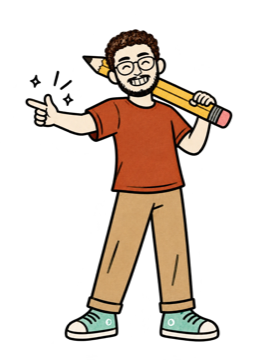
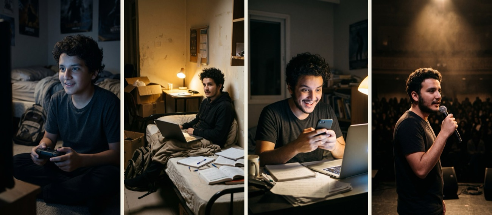
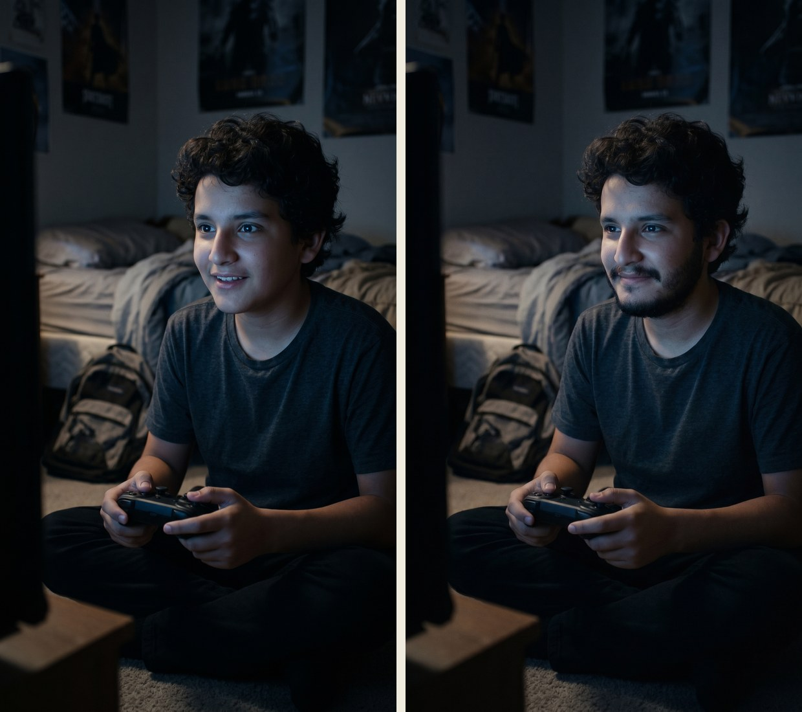

What you need
- One clear photo of you today: front-facing, sharp, no filter, just you.
- Google Flow: a website, nothing to install: labs.google/flow. A laptop is easiest.
- Your real dates: the day it started, and 3 or 4 moments since.
- A few real photos from those moments, if you have them. Real ones hit harder than any AI shot.
Pick a start day. Make younger you from today's photo, one age at a time. Mix in your real photos. A day counter ties it together, and the last shot is you today, in the same spot as day 1.
Write your timeline

The film is only as good as the dates are true. Mine, from the day GTA 5 came out:
Day number = the date minus your start date. In Google Sheets, =DAYS("2026-11-19", "2013-09-17") gives 4811. If you only know the year of a moment, show the year, not a made-up day.
Upload your photo
Open labs.google/flow → New project → drop in your photo of today.
Attach it to every prompt
Before each prompt: + → pick your photo → Add to prompt. Without it, the face drifts.
One age at a time
Ask for 2 images, 9:16 of one age per message. Keep the best, then move on to the next age.
The de-ageing prompt
This made the 13-year-old me. Change the parts in the table below.
Make 2 images, 9:16 portrait, photoreal cinematic film still. The person in the attached photo as a 13-year-old in September 2013: keep their exact face shape, eyes, eyebrows, nose, skin tone and hair, but a young teenager's face. They sit cross-legged on the carpet of a small dark bedroom late at night, holding a plain black game controller with no logos, eyes wide and happy, lit only by the cool blue glow of a TV just outside the frame (the screen itself is not visible). Soft film grain, shallow depth of field, 35mm look. No text, no logos.
Every age, same face

Make 2 images, 9:16 portrait, same photoreal film-still look, from the attached photo of the same person (keep their exact face shape, eyes, eyebrows, nose, skin tone and hair, natural face width). Them at [AGE] in [YEAR], [WHERE THEY ARE AND WHAT THEY'RE DOING]. No text, no logos.
The match cut
The last shot is you today, in the exact room and pose of day 1. Attach two things: the day-1 image first, then your photo.

Make 2 images, 9:16 portrait. Recreate the first attached image with the exact same room, camera angle, framing, pose, light and film grain, but the person is now the grown-up in the second attached photo, as they are today: their exact face, hair and facial hair, a calm, quiet smile. No text, no logos.
One shot in Flow video
Animate the last shot
On the image: ⋮ → Animate. It becomes the first frame of a video.
Check the cost first
Open the settings chip and set x1. Flow shows what it will cost before you generate: one 8-second clip was 24 credits on my plan.
Slow, gentle push-in toward them. They stay seated on the floor, thumbs moving softly on the controller, they blink and a small quiet smile grows, the cool blue TV glow flickers softly across their face. The TV screen is never shown. Same face and hair throughout. No text, no logos, no other people, no speech.
The shot list
About 40 seconds. One line of voice-over per shot, each cut on its words. In order:
Use music you made or have rights to. Keep it under the voice: quiet at the start, a swell into the big number.
Before you post

Now make your own years
One photo and a few true dates is all it takes.